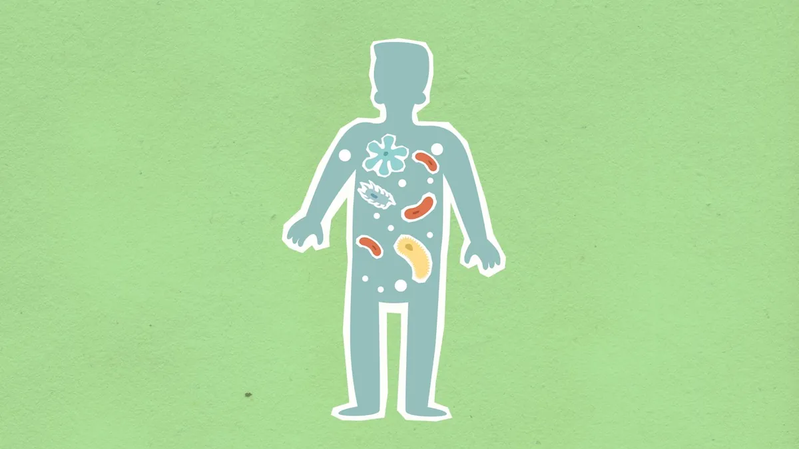
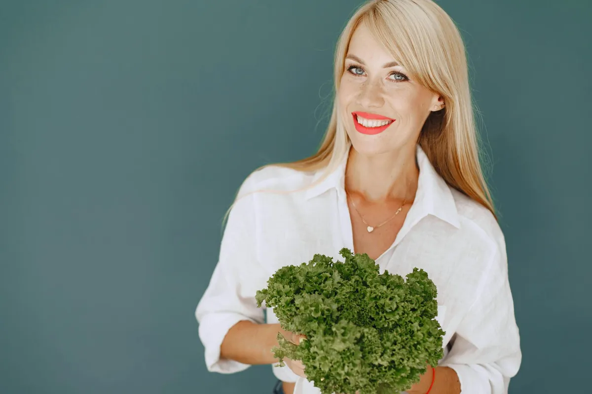

Unlock Your Gut Health: The Microbiome Diet for a Happier You

Key takeaways
- I used to think my gut issues were just a part of life.
- Bloating after meals, that sluggish feeling that never quite went away, and even the occasional mood dip – I just accepted it.
- Track what feels sustainable and adjust gradually.
I used to think my gut issues were just a part of life. Bloating after meals, that sluggish feeling that never quite went away, and even the occasional mood dip – I just accepted it. It wasn't until I was staring at a plate of my 'healthy' salad, feeling worse than ever, that I realized something had to change. That's when I started digging into the fascinating world of our gut microbiome and how the microbiome diet could truly be the key to unlocking a happier, healthier me. It’s not about perfection; it’s about feeding the trillions of tiny helpers living inside us.
Think of your gut as a bustling city. The microbiome diet is essentially about making sure all the residents – the good bacteria, the fungi, the viruses – are well-fed and happy. When they thrive, your digestion works smoothly, your immune system is strong, and believe it or not, your mood gets a serious boost. I’ve found that focusing on a diverse range of plant-based foods is the cornerstone of this approach. It’s about variety, not restriction.
So, what does this look like on my plate? It means embracing fiber-rich foods that act as prebiotics – basically, food for your good gut bugs. I’m talking about things like Jerusalem artichokes, chicory root, and even just a good old-fashioned onion or garlic clove. These aren't always the glamorous foods, but they are powerhouses for your gut. I also make sure to include fermented foods. Things like kimchi, sauerkraut, kefir, and tempeh are packed with probiotics, introducing beneficial bacteria directly into my system. I used to buy them, but now I'm experimenting with making my own sauerkraut at home – it’s surprisingly easy and rewarding!
When I started paying attention to my gut microbiome, I noticed subtle shifts first. My energy levels felt more stable throughout the day. That persistent brain fog started to lift. And the digestive discomfort? It became the exception, not the rule. It’s a journey, and some days are better than others, but the overall trend has been overwhelmingly positive. This isn't about a quick fix; it's about building a sustainable relationship with food that nourishes my entire body, starting from the inside out.
The 2-Minute Win
Right now, as you're reading this, grab a glass of water and add a squeeze of lemon or a splash of apple cider vinegar. This simple act can help kickstart your digestive juices and is a tiny step towards a happier gut.
One of the biggest revelations for me was understanding that not all fats are created equal when it comes to gut health. While I used to shy away from fats, I learned that incorporating healthy sources like avocados, olive oil, and fatty fish (hello, salmon!) can actually help reduce inflammation in the gut. This is crucial because chronic inflammation is a major disruptor of a healthy microbiome. It’s about balance and choosing the right kinds of fuel.
I’ve also learned to be mindful of the foods that can disrupt my gut balance. For me, excessive processed sugars and artificial sweeteners were major culprits. They tend to feed the less desirable microbes, leading to an imbalance. It's not about cutting them out entirely forever, but about recognizing when they're derailing my progress and making conscious choices to limit them. This awareness is a huge part of the microbiome diet.
Making these dietary shifts has had a ripple effect on my overall well-being. I feel more resilient to stress, my sleep quality has improved, and I've even noticed a positive impact on my skin. It’s incredible how interconnected everything is. Focusing on my gut health has been a gateway to improving other aspects of my life, a truly related healthy tip. I’ve found that incorporating a variety of colorful fruits and vegetables daily is key to getting a wide spectrum of nutrients and fibers. This is a fundamental part of another practical guide to better eating.
Pro-Tip: Don't be afraid to experiment with herbs and spices! Turmeric, ginger, and cinnamon aren't just flavorful; they possess powerful anti-inflammatory properties that can benefit your gut lining. I love adding ginger to my morning smoothie.
Consistency is key, and I’ve learned that it’s okay to have off days. The goal is progress, not perfection. If you slip up, just get back on track with your next meal. This mindset helps me stay consistent with this approach. For more insights, you can explore more gut guides. It's about listening to your body and understanding what makes you feel your best. This journey is about self-discovery and creating a personalized path to wellness, a similar wellness insight.
Remember, this is an ongoing process of learning and adjustment. Your gut microbiome is unique, and what works best for me might need slight tweaks for you. Be patient, be kind to yourself, and celebrate the small victories along the way. Educational only — not medical advice.
Recommended Reading
- Mindful Eating: Boost Digestion & Gut Health
- Mindful Eating: Boost Gut Health & Digestion Naturally
- Mindful Eating Techniques for Better Digestion and Sustainable Weight Management
More in gut
 gut
gutThe Gut's Double Whammy: How Stress and Late-Night Bites Wreck Your Digestion
Discover how the combo of stress and late-night eating creates The Gut's Double Whammy, wrecking your digestion. Learn p
Read article →
gutUnlock Your Gut Health: Probiotics, Prebiotics, and Your Microbiome Explained
Unlock your gut health! Learn about probiotics, prebiotics, and your microbiome. Discover practical tips to improve dige
Read article →Related posts
gutThe Gut's Double Whammy: How Stress and Late-Night Bites Wreck Your Digestion
Discover how the combo of stress and late-night eating creates The Gut's Double Whammy, wrecking your digestion. Learn p
Read article →Unlock Your Gut Health: Probiotics, Prebiotics, and Your Microbiome Explained
Unlock your gut health! Learn about probiotics, prebiotics, and your microbiome. Discover practical tips to improve dige
Read article →
gutPersonalized Nutrition for Optimal Gut Health: Your Custom Blueprint
Unlock optimal gut health with personalized nutrition. Discover how tailoring your diet to your unique microbiome can tr
Read article →